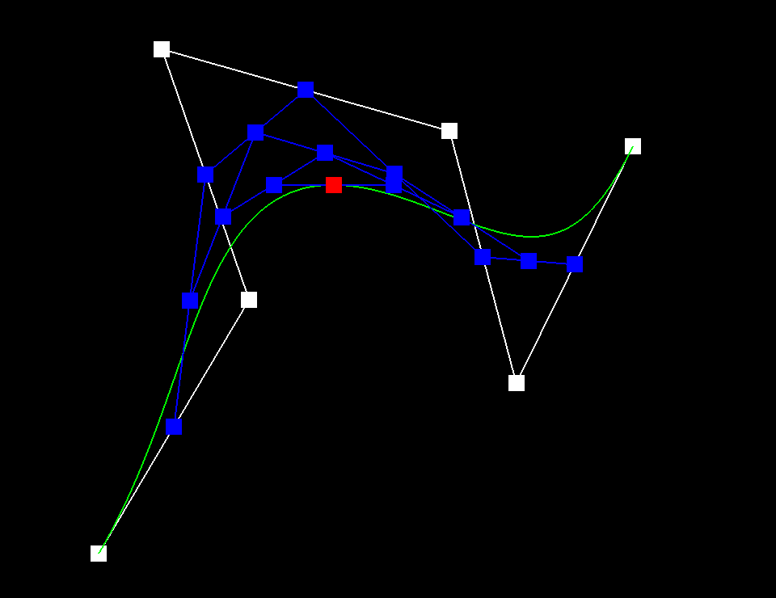

In this project, we experimented with mesh geometries, mainly focusing on the concepts of Bezier curves and the halfedge data structure. A mesh has many ways of being changed/adjusted, such as changing its shading (i.e Phong) and subdividing it’s faces further (i.e. flipping/splitting edges to upsample). One big thing we learned from this project is the power of abstraction, especially related to the halfedge structure. By implementing simple flip and split functions using a much smaller example (2 triangles), we are able to do amazing things with much larger meshes!
This task was completed relatively smoothly once we understood how to work with the vector of Vector2Ds. Initially, we had attempted breaking down the Vector2D into its x and y components; once we later tried directly using multiplication on the vector, writing evaluateStep() was a smooth experience.
De Casteljau's algorithm uses recursive linear interpolations on an ordered series of "control points" to find a point lying on a Bezier curve parameterized using the algorithm. A parameter t between 0 and 1 defines how far along a line we are finding the next control point, up to a point on the Bezier curve itself. Between every two control points, we generate a new control point for use in the next step of the algorithm. This new control point lies a ratio of t away from the first old control point and 1 - t away from the second old control point. This process will generate one fewer new control points than there were old control points for every step. Through enough interpolation steps, this algorithm will produce a single point; this point lies at t into the curve from 0 to 1. For our evaluateStep() implementation that we use for this project, we define a new C++ vector of Vector2Ds to be returned. The Vector2D result of each linear interpolation of two control points is pushed to the larger vector of Vector2Ds, and this vector of vectors is returned, bringing us a step closer to evaluating a point on the Bezier curve. By evaluating t continuously between 0 and 1, we plot out the full Bezier curve we have defined.


Above, we see a 6 control point Bezier curve being evaluated through all the steps up to the final point on the curve. Below, we see the completed Bezier curve, as well as a similar curve modified through manipulation of the control points and parameter t.
An initial design problem we encountered was how to fit evaluateStep(), evaluate1D(), and evaluate() together to find a single point on the Bezier curve. Realizing that evaluate1D() can be applied on any axis was a major breakthrough for completing this part successfully.
De Casteljau's algorithm can be used for Bezier surfaces by multiple applications of the algorithm on different axes to find a point on the surface. For a point (u, v) on an n x n grid of control points, we start evaluating each Bezier curve drawn using each row of control points for the u-points at parameter u. These u-points line up in a column, defining one more Bezier curve which we may evaluate using parameter v to get the point (u,v) of the Bezier surface. In our implementation, we make use of the same Bezier curve step evaluation function as in Task 1, except now using Vector3Ds. evaluate1D() is a function we use to repeatedly run evaluateStep() until we reach the final vector that lies on the Bezier curve itself. evaluate() goes through the full process of evaluating (u,v) on the Bezier surface.
Below, we see teapot.bez evaluated by our applications of De Casteljau's algorithm.
Calculating the face normals and how to combine them for the vertex normal required understanding what a cross product represented and time to reason about vectors in 3D space. We had originally attempted to make the normal() function included for halfEdgeMesh faces but came to realize that this task is easier done by calculating face normals using our own method.
Our implementation of area-weighted vertex normals calculates the cross products of all the faces adjoining a given vertex, sums these cross products up, and returns the unit vector of this sum.
To find the area of a face, we find the three Vector3D positions of the face, get two of the vectors bounding the face by subtracting the outlying positions from the position of the "root" vertex that we are calculating the vertex normal for, and then taking the cross product of those two vectors. We do not divide by half in accordance with the standard triangle area equation, as the weighting done by the face normals would have the same ratio with each other, resulting in the vertex normal facing the right direction regardless and produce the desired unit vector.


Above, we see our teapot with default flat shading, and Phong shading taking advantage of our area-weighted vertex normal calculations.
Initially, we did not realize the full extent that the pointers needed to be reassigned after an edge flip. At first, we only reassigned edges/halfedges/etc. that we expected to change after an edge flip, but quickly learned we needed to manually assign every single pointer, regardless of if it had been changed or not in the flip. Finally, we were originally trying to assign pointers based on our own memory or online diagrams, but we ultimately decided it was best for us to draw everything out and use that as our reference.
We have implemented the edge flip operation by taking into consideration all mesh elements (halfedge, edge, face, vertex) associated with the two faces next to the edge we are flipping. All pointers are considered in our implementation, and ones that are changed are updated appropriately. As the halfedge instances store most of the info, a bulk of the pointer changes comes from the reassignments of halfedge pointers, with the face and vertex pointers also updated to guarantee they do not reference a moved halfedge. Interestingly enough, edges themselves do not need to be modified, as no halfedge gets reassigned to another edge, so the edge we return itself does not change after the operation. If an edge is on a boundary, we return the edge without going through any pointer modifications.
The most eventful part of debugging came while implementing upsampling. We had to completely reassign our pointers multiple times to follow different graphics of edge flipping that we were using as a reference. Additionally, we had to ensure that we were assigning a sufficient amount of pointers for the halfedges, edges, vertices, and faces.
First, we weren’t sure at first how/where to set the location of the new vertex. We originally had the vertex being placed at the horizontal midpoint, but eventually learned from our incorrect splitting that it needed to be placed at the vertical midpoint. Next, we had a small issue with the calculation of the midpoint itself, changing it from an int to a float. Additionally, similar to flip edge, we did not initially realize that we had to set neighbors for every single halfedge along with the halfedges for all of the vertices, edges, and faces. Finally, we were having problems with the “isNew” labeling for our edges in our upsample until we realized that e5 along with e0 is an old edge. We adjusted the booleans at the end of the function accordingly.
We implemented the edge split operation very similarly to edge flip. We started by checking if the edge we are given was on a boundary. If it was, we just returned immediately. If not, we started by assigning all of the edges, halfedges, vertices, and faces to variables, along with making new ones in anticipation for the split. During this time, we also prepared the location of the new vertex and set it equal to newVertex->position. Next, we updated the pointers to what they should be post split (according to a hand drawn diagram), making sure to set the neighbors for all the halfedges, along with setting the halfedges of all the vertices, faces, and edges. Finally, we set the new vertex and new edges’ isNew tags to true, and returned the new vertex.
The most eventful part of the debugging came while implementing upsampling. Our upsampling wasn’t looking correct, and we determined it was because we weren’t labeling our edges’ isNew tags correctly. It appeared that our code would flip the wrong edges (thinking they were new), and not flip the correct edges (thinking they were old). We tracked this problem down to our split edge, since this was the only function that was setting isNew to true in our code. After looking at our split edge diagram that we drew out, we finally realized that both our e0 AND our e5 needed to remain as old edges, since e5 wasn’t actually new, but in fact half of the original edge e0. Once we fixed this in our code, our upsample worked perfectly!
At first, we were very confused on how to ensure that each iteration of upsample had correct isNew labeling for our edges and vertices. We were worried about our implementation failing after multiple iterations. To solve this, we added two for loops at the beginning of our function that set every edge and vertex’s isNew to false. Next, we had a few issues with our if statement checks for splitting and flipping edges. For instance, we initially were checking the isNew tag for edges to determine splits, but instead opted to look at the isNew tags of each of the vertices of each edge to determine if the edge was new. Finally, we were at first struggling on where we would temporarily store the new positions of the old and new vertices, even considering making an array. Ultimately, we realized we could just store the values in the newPosition fields of vertices and edges.
First, we made sure to set all of the edges and vertices’ isNew tags to false, in order to prevent infinite loops and/or incorrect upsampling after further iterations. Next, we computed the new positions of the newly added vertices (using the formula from the project spec) and stored those locations temporarily in our old edges. After that, we computed the new positions of the old vertices (using the other formula from the project spec) and stored those locations temporarily in the old vertices. From there, we split all existing (old) edges by checking their isNew tags, and then flipped all new edges that connected one old vertex and one new one (again, using the isNew tags of the vertices and edges). Finally we set all of the new vertex positions using our stored values from earlier.
The mesh becomes more detailed, each panel looking like a recursive version of its previous self. The sharp edges and corners become more and more rounded over time.
Yes you can pre-process the cube with edge flips and splits to allow for it to subdivide symmetrically. This prevents the upsampling function from averaging the vertex locations of different faces of the cube, the root cause of the corner smoothing and asymmetricality. If you preprocess correctly, the corners of the cube are preserved much better, as you can see in this image.
Our webpage is at https://cal-cs184-student.github.io/sp22-project-webpages-Lukatastic/proj2/index.html